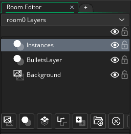
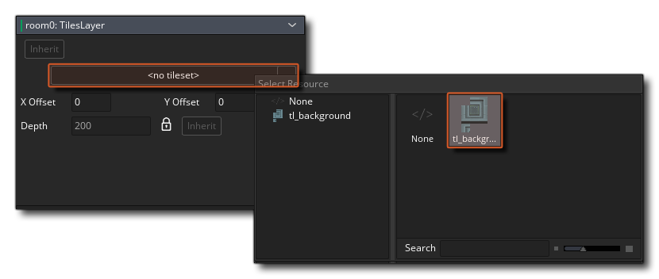
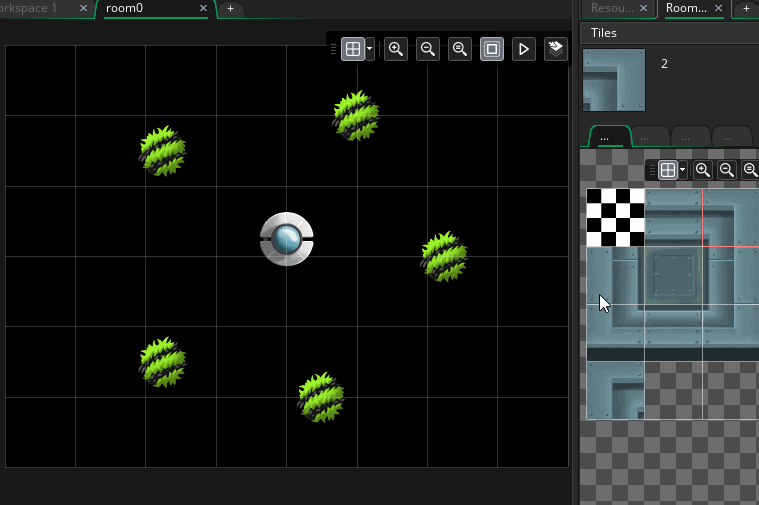
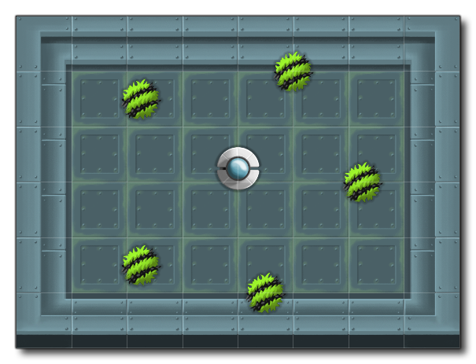

We need to go back to the Room Editor workspace now, as we want to create a new layer called the Tilemap Layer. We currently have two instance layers (one for the player and the enemies, one for the bullets) and a background layer. We want to add a tilemap layer between the background layer and the bullet layer so click the Add Tilemap button to add the layer first, then click  on it and drag it to position it between those two.
on it and drag it to position it between those two.

As with almost everything in GameMaker Studio 2, you can give this new layer a name like "TilesLayer" or something, and then you can go ahead and assign the tile set that we made previously to it. This is done by going to the Layer Properties window - which is opened by default on the left of the room editor when you select any layer - and then clicking the button that says "No Tile Set" which will open a window to let you select the tile set to use: 
The tile set selected will now open on the right of the room editor workspace and you can click on any of the tiles to select it for "painting" into the room:

We now need to paint the tiles in a way that makes sense for the room and the tile set chosen, so select the appropriate tiles to make the final tilemap layer look like this: 
A few things to note here:
- Tiles will always be added to a grid the same size as the tile set assigned to the tilemap layer
- You can only place one tile per grid square
- You can select the empty tile to paint with and remove existing tiles, but you can also use the right mouse button

- You can move around the room using the middle mouse button
 and moving the mouse
and moving the mouse
You can test the game now and it should play exactly the same as it did before, only now we have a nicer background for the action to happen on. In a later tutorial in this series we'll look at creating a "wall" around the arena so the player can't leave the room area, but for now we have what we wanted.